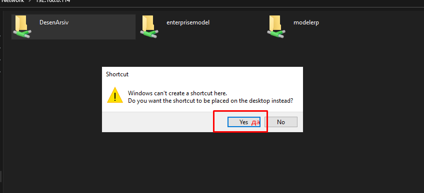

Yuklab olgandan keyin o'sha faylni oching va quyidagi yordamchi instruksiyaga nazar soling:
O'zingizga kerakli papka yoki file ni tanlang

Context menuni ochish uchun sichqonchaning o'ng tugmasini bosing va quyidagi menuni tanlng

Bizdan file yoki papkani Рабочий столga joylash uchun ruxsat so'raydi va uni tasdiqlaymiz.
Рабочий столda biz xohlagan papka paydo bo'ladi.
Agarda biron muammo sodir bo'lgan bo'lsa ozroq muddatdan so'ng qaytatdan urinib ko'ring, chunki local tarmoqda uzilishlar bo'lgan bo'lishi mumkin.